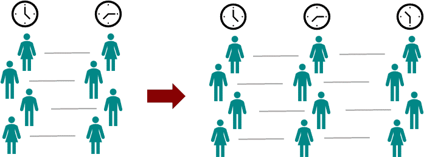
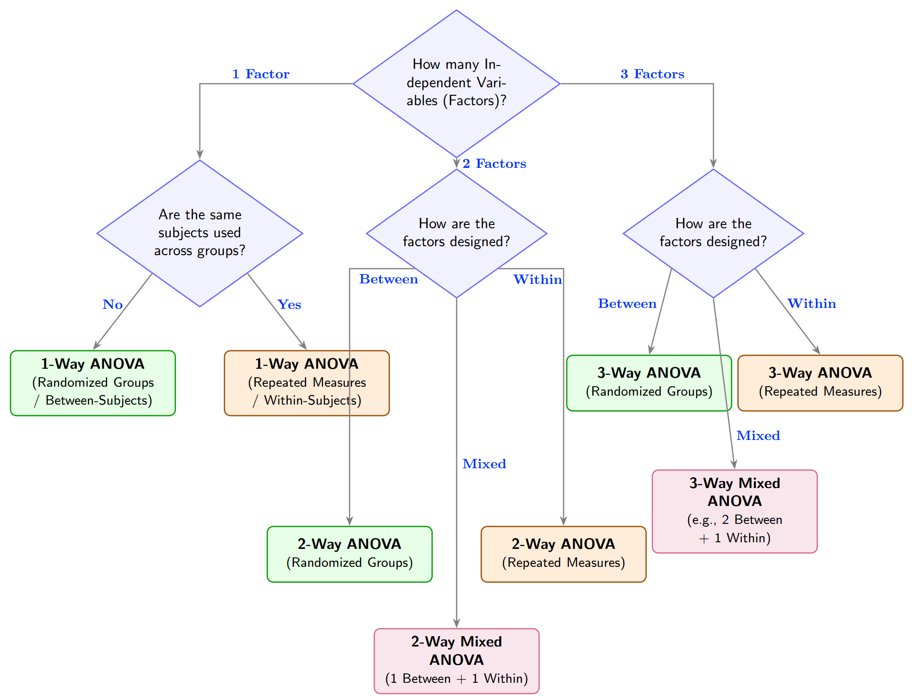

1 Why Not Multiple T-Tests?
The primary reason we cannot simply perform multiple pairwise $t$-tests to compare three or more groups comes down to a fundamental concept in probability: Type I Error Accumulation.
The Family-Wise Error Problem
Every hypothesis test carries an \(\alpha\) (typically \(0.05\)) — the probability of a Type I Error: rejecting a true null hypothesis by chance.
Type I Error Rate \(\alpha\)
A Type I error occurs when the null hypothesis (\(H_0\)) is true, but is incorrectly rejected. It represents a false positive result, where a statistical test detects an effect or relationship that does not actually exist in the population. The probability of committing a Type I error is denoted by the significance level \(\alpha\).Running multiple independent t-tests compounds this risk. The probability of at least one false positive across \(c\) independent comparisons is:
The number of pairwise comparisons grows quickly with group count: \(c = \frac{k(k-1)}{2}\).
| Groups (\(k\)) | Comparisons (\(c\)) | Family-Wise Error Rate |
|---|---|---|
| 3 | 3 | \(1 - 0.95^3 \approx 14.3\%\) |
| 4 | 6 | \(1 - 0.95^6 \approx 26.5\%\) |
| 5 | 10 | \(1 - 0.95^{10} \approx 40.1\%\) |
| 6 | 15 | \(1 - 0.95^{15} \approx 53.7\%\) |
The ANOVA Solution
ANOVA evaluates all groups simultaneously in a single test. The global Type I error rate stays locked at exactly \(\alpha\) regardless of how many groups are involved.
2 Partitioning Variance & the F-Statistic
Although ANOVA compares group means, it does so by analyzing variance. Total variability in a dataset can be cleanly split into two competing sources:
To see why it's possible to compare mean by analyzing variance, recall the concept of the Law of Total Variance. The partitioning of variance in ANOVA is actually a direct application of the principle:
Law of Total Variance
Total variance of a random variable \(Y\) can be broken down into two distinct parts based on its relationship with another random variable \(X\). In other word, we ask how much variance in \(Y\) can be explained by \(X\). $$ Var(Y) = \underbrace{E[Var(Y|X)]}_{\text{random flatuation (noise)}} + \underbrace{Var(E[Y|X])}_{\text{ difference in mean (signal)} } $$ If all the variance can be explained by \(Y\), that is \(Var(Y) \approx E[Var(Y|X)] \), we coclude the difference in mean is negligible \(Var(E[Y|X]) \approx 0\).- Between-Group Variance (Signal): How far do the group means deviate from the grand mean? Large when the treatment has a strong effect.
- Within-Group Variance (Noise): How much do individuals vary inside their own group? This exists regardless of any treatment and captures biological differences, measurement error, and random fluctuation.
The F-Ratio
ANOVA quantifies the treatment effect as a signal-to-noise ratio called the F-statistic. We first convert each Sum of Squares into a variance estimate — the Mean Square (MS) — by dividing by the appropriate degrees of freedom:
| Scenario | F-value | Interpretation |
|---|---|---|
| No treatment effect | \(F \approx 1\) | Between \( \approx \) Within; nothing to detect |
| Moderate effect | \(F > 1\) | Between exceeds Within; possible signal |
| Strong effect | \(F \gg 1\) | Clear signal above background noise |
The F-Distribution
Unlike the symmetric \(t\)-distribution, the F-distribution is strictly positive (variance ratios can't be negative) and right-skewed �most random F-ratios cluster near 1, but large values occur by chance with decreasing probability. Its shape is governed by two degrees of freedom: \(df_1 = k-1\) (numerator) and \(df_2 = N-k\) (denominator).
Thus an \(F\)-distribution is always specified using a pair of degrees of freedom: \(F(df_{\text{numerator}}, df_{\text{denominator}})\)
F-Ratio Explorer
Adjust the sliders to change how spread apart the group means are (signal) and how much individuals vary within groups (noise). Watch the F-value and p-value respond.
Effect Size: \(\eta^2\) (Eta-Squared)
Statistical significance tells you an effect exists; effect size tells you how large it is. Eta-squared expresses the proportion of total variance explained by the treatment:
Conventions: \(\eta^2 \approx 0.01\) is small, \(\approx 0.06\) is medium, \(\approx 0.14\) is large. Always report alongside the p-value.
3 Hypotheses & Assumptions
Statistical Hypotheses
Post-Hoc Tests
When \(p < \alpha\), use Tukey's Honestly Significant Difference (HSD) to compare all possible pairs while controlling the family-wise error rate. Run post-hoc tests only if — and only if — the ANOVA is significant.
Core Assumptions
4 Number of Factors
Before choosing an ANOVA, clarify the vocabulary of your study:
One-Way ANOVA
One categorical independent variable with three or more levels and one continuous DV.
| Source | Sum of Squares | \(df\) | Mean Square | F-Ratio |
|---|---|---|---|---|
| Between Groups | \(SS_\text{Between}\) | \(k - 1\) | \(\dfrac{SS_\text{Between}}{k-1}\) | \(\dfrac{MS_\text{Between}}{MS_\text{Within}}\) |
| Within Groups | \(SS_\text{Within}\) | \(N - k\) | \(\dfrac{SS_\text{Within}}{N-k}\) | — |
| Total | \(SS_\text{Total}\) | \(N - 1\) | — | — |
\(k\) = number of groups; \(N\) = total sample size.
Two-Way ANOVA: Main Effects and Interactions
Two categorical IVs are studied simultaneously. The ANOVA produces three separate F-tests:
- Main Effect of A: Does the DV differ across levels of A, averaging over all levels of B?
- Main Effect of B: Does the DV differ across levels of B, averaging over all levels of A?
- Interaction (A x B): Does the effect of A on the DV change depending on which level of B is present?
Interaction Plot Explorer
Adjust the sliders. When the two lines are parallel, there is no interaction — the effect of Factor A is identical at every level of B. When lines converge, diverge, or cross, an interaction is present.
Interpreting Results: Interaction First
When you receive Two-Way ANOVA output, the order in which you read the F-tests matters. The correct sequence is:
Why Main Effects Can Mislead
A main effect averages over all levels of the other factor. When an interaction exists, that average hides the fact that the effect reverses or disappears in certain conditions.
Follow-Up: Simple Main Effects
When an interaction is significant, replace main-effect tests with simple main effects: examine the effect of one factor separately at each level of the other factor.
| Interaction significant? | Next step | Why |
|---|---|---|
| No | Interpret main effect of A; interpret main effect of B | Averaging across levels is valid — the effect is consistent everywhere |
| Yes | Test simple main effects (effect of A at each level of B, and vice versa) | The averaged main effect may be inflated, deflated, or zero — it cannot be trusted alone |
Example: Simple Main Effects Analysis
A researcher tests whether a protein supplement (Placebo vs. Protein) affects strength gain differently depending on training status (Novice vs. Experienced). 80 participants are randomly assigned to one of four cells (n = 20 each). However, the Two-Way ANOVA returns a significant interaction, \(F(1, 76) = 9.42,\ p = .003\).
Because the interaction is significant, we do not reject null hypothesis even though \(p = 0.03 < 0.05\). Instead, we test simple main effects �the effect of Supplement separately within each Experience level, and the effect of Experience separately within each Supplement condition.
| Novice | Experienced | |
|---|---|---|
| Placebo | 4 kg | 3 kg |
| Protein | 12 kg | 5 kg |
The averaged main effect of Supplement reports +5 kg, but this conceals that the benefit is +8 kg for novices and only +2 kg for experienced athletes. Reporting the main effect alone overstates the supplement's value for experienced athletes and understates it for beginners.
Three-Way ANOVA
Adding a third factor expands the model to seven distinct components, each with its own F-test:
5 Experimental Designs
The number of factors tells you how many IVs exist. The experimental design tells you how participants are distributed across those variables — and this fundamentally changes how the error term is calculated.
Between-Subjects (Randomized Groups)
Each participant is assigned to exactly one condition. Groups are completely independent.
- Error term: \(MS_\text{Within}\) — contains all individual differences (natural ability, baseline fitness, pain tolerance) plus random noise. The denominator of F is relatively large.
- Trade-off: You need a larger treatment effect or bigger sample sizes to achieve significance.
Within-Subjects (Repeated Measures)
The same participants complete every condition. Each person serves as their own control.

- Statistical advantage: Individual differences can be mathematically removed from the error term, shrinking the denominator dramatically and boosting statistical power. Smaller samples are required.
- New assumption — Sphericity: Because the same people appear in every condition, observations are no longer independent. Sphericity requires that the variances of differences between all condition pairs are equal (Test with Mauchly's Test. If violated, apply the Greenhouse-Geisser correction to the degrees of freedom).
Mixed Design (Split-Plot ANOVA)
At least one between-subjects factor and at least one within-subjects factor. The model requires two separate error terms:
- Between-subjects error: Tests the between-subjects main effect; still includes individual differences.
- Within-subjects error: Tests the within-subjects main effect and the interaction; individual differences removed.
Design Summary
| Design | Between Factor(s) | Within Factor(s) | Example |
|---|---|---|---|
| One-Way Randomized | 1 (3+ levels) | None | Three different exercise programmes, separate groups. |
| One-Way Repeated Measures | None | 1 (3+ levels) | Same patients measured at Baseline, Week 4, Week 8. |
| Two-Way Randomized | 2 Factors | None | Drug dose × Age group, all independent groups. |
| Two-Way Mixed | 1 Factor | 1 Factor | Treatment vs. Placebo measured at 3 time points. |

6 Practice: Identify & Choose
Work through each scenario below. For each one, identify the number of factors, the experimental design, and the correct ANOVA test. The dependent variable is shown in blue — start there, then identify what is being manipulated and how participants were assigned.